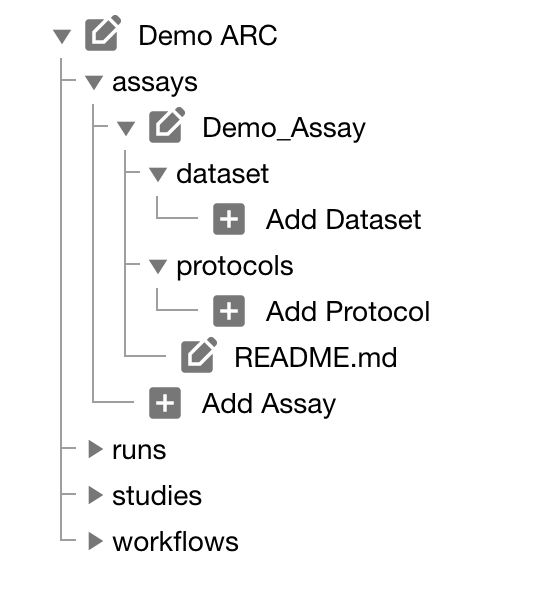

Home
Fundamentals
Research Data Management
FAIR Data Principles
Metadata
Ontologies
Data Sharing
Data Publications
Data Management Plan
Version Control & Git
Public Data Repositories
Persistent Identifiers
Electronic Lab Notebooks (ELN)
DataPLANT Implementations
Annotated Research Context
User Journey
ARC specification
ARC Commander
QuickStart
QuickStart (Experts)
Swate
QuickStart
Walk-through
Best Practices For Data Annotation
DataHUB
DataPLAN
Ontology Service Landscape
ARC Commander Manual
Setup
Git Installation
ARC Commander Installation
Windows
MacOS
Linux
ARC Commander DataHUB Access
Before we start
Central Functions
Initialize
Clone
Connect
Synchronize
Configure
Branch
ISA Metadata Functions
ISA Metadata
Investigation
Study
Assay
Update
Export
ARCitect Manual
Installation - Windows
Installation - macOS
Installation - Linux
QuickStart
ARCmanager Manual
What is the ARCmanager?
How to use the ARCmanager
Swate Manual
Swate Installation
Excel Browser
Excel Desktop
Windows – installer
Windows – manually
macOS – manually
Organization-wide
Core Features
Annotation tables
Building blocks
Building Block Types
Adding a Building Block
Using Units with Building Blocks
Filling cells with ontology terms
Advanced Term Search
Templates
File Picker
Expert Features
Contribute Templates
ISA-JSON
DataHUB Manual
Overview
User Settings
Generate a Personal Access Token (PAT)
Projects Panel
ARC Panel
Forks
Working with files
ARC Settings
ARC Wiki
Groups Panel
Create a new user group
Data publications
Passing Continuous Quality Control
Submitting ARCs with ARChigator
Track publication status
Use your DOIs
Guides
ARC User Journey
Create your ARC
ARC Commander QuickStart
ARC Commander QuickStart (Experts)
ARCitect QuickStart
Annotate Data in your ARC
Annotation Principles
ISA File Types
Best Practices For Data Annotation
Swate QuickStart
Swate Walk-through
Share your ARC
Register at the DataHUB
DataPLANT account
Invite collaborators to your ARC
Sharing ARCs via the DataHUB
Work with your ARC
Using ARCs with Galaxy
Computational Workflows
CWL Introduction
CWL runner installation
CWL Examples
CWL Metadata
Recommended ARC practices
Syncing recommendation
Keep files from syncing to the DataHUB
Working with large data files
Adding external data to the ARC
ARCs in Enabling Platforms
Publication to ARC
Troubleshooting
Git Troubleshooting
Contribute
Swate Templates
Knowledge Base
Teaching Materials
Events 2023
Nov: CEPLAS PhD Module
Oct: CSCS CEPLAS Start Your ARC
Sept: MibiNet CEPLAS Start Your ARC
July: RPTU Summer School on RDM
July: Data Steward Circle
May: CEPLAS Start Your ARC Series
Start Your ARC Series - Videos
Frequently Asked Questions
last updated at 2023-08-01
About this guide
In this guide we focus on how to use the ARCitect to create your ARC and structure, store and share your data.
UserAdvanced
ModeTutorial
Before we can start
Please make sure
☑️ The latest version of the ARCitect is installed on your computer
☑️ You have a DataPLANT account
💡 Consider reading about the ARC
Preparation
Before creating your own ARC, invest some time to think about the following questions.
- What is my investigation?
- What is my study?
- Which assay did I perform?
- What is my (raw) dataset?
- What protocols did I use?
💡 It might help to have this info ready in a text file. In particular, try to think about useful names (identifiers) for investigation, study and assay.
Initiate the ARC folder structure
- Start the ARCitect
- Create a New ARC (2)
- Select a location and name for your ARC
Your ARC's name
💡 By default, your ARC's name will be used:
- for the ARC folder on your machine
- to create your ARC in the DataHUB at
https://git.nfdi4plants.org/<YourUserName>/<YourARC> (see next steps)
- as the identifier for your investigation
💡 Make sure that no ARC exists at https://git.nfdi4plants.org/<YourUserName>/<YourARC>. Otherwise you will sync to that ARC.
💡 Avoid spaces in your ARC's name
Add details about your investigation
Click on your ARC's name to add details, such as

Add contributors
In the section "People" click "ADD PERSON" to add at least one contributor

Add a study to your ARC
Click "Add Study" in the sidebar and enter an identifier
Add details about your study
Click on your study's name to add details, such as
- general metadata,
- people,
- publications and
- data process information

Add a protocol to your study
Click "Add Protocol" in the sidebar to add a protocol to your study
Adding protocols
You can either
- directly write a new protocol within the ARCitect or
- import an existing one from your computer

Add an assay to your ARC
Click "Add Assay" in the sidebar and enter an identifier
Link your assay to a study
You can either
- link your new assay to an existing study in your ARC or
- create a new one (with the same name as the assay)
Add information about your assay
In the assay panel you can
- link or unlink the assay to studies, and
- define the assay's
- measurement type,
- technology type and
- technology platform.
- add data process information

Add protocols and datasets to your assay
In the file tree you can
- add a dataset and
- protocols associated to that dataset.
💡 Add Dataset allows to import data from any location on your computer into the ARC.
⚠️ Depending on the file size, this may take a while. Test this with a small batch of files first.

Share your ARC
Click Login (1) in the sidebar to login to the DataHUB.
💡 This automatically opens your browser at the DataHUB (https://git.nfdi4plants.org) and asks you to login, if you are not already logged in.
Versions: Connection to the DataHUB
To communicate with the DataHUB, navigate to **Versions** (6)
Connection to the DataHUB
If you are logged in, the versions panel shows
- your DataHUB's Full Name and eMail
- the URL of the current ARC in the DataHUB
https://git.nfdi4plants.org/<YourUserName>/<YourARC>

Upload your ARC to the DataHUB
The versions panel allows you to
- store the local changes to your ARC in form of "commits",
- sync the changes to the DataHUB, and
- check the history of your ARC
To upload your ARC:
- Enter a "commit message" to shortly describe the changes to your ARC
- Click COMMIT to save your changes locally
- Click UPLOAD to upload your ARC to the DataHUB
Check if your ARC is successfully uploaded
- sign in to the DataHUB
- Check your projects
DataPLANT Support
Besides these technical solutions, DataPLANT supports you with community-engaged data stewardship. For further assistance, feel free to reach out via our
helpdesk
or by contacting us
directly
.